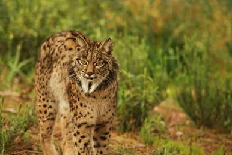
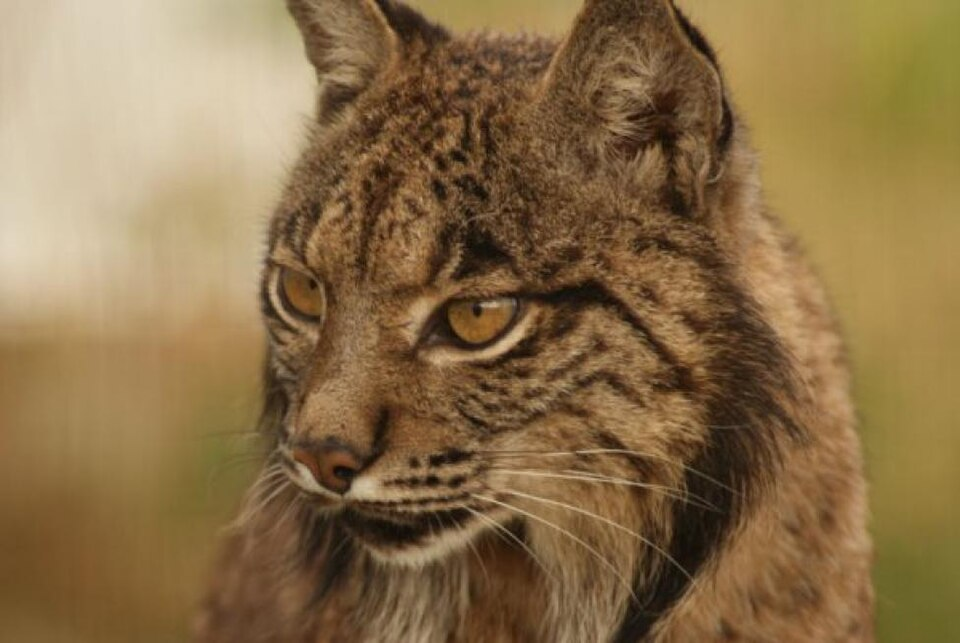

Lince-ibérico (Lynx pardinus)



Estado de conservação: Vulnerável (VU). Ele já esteve à beira da extinção absoluta (chegou a categoria "Em Perigo Crítico"), mas esforços gigantescos de conservação conseguiram que ele voltasse para Vulnerável.
Habitat: Florestas e matagais mediterrâneos da Península Ibérica (Espanha e Portugal), repletos de vegetação densa para se esconder e áreas abertas para caçar.
Alimentação: Cerca de 80% a 90% da dieta dele é composta por coelhos-bravos. Além deles, come algumas aves ou pequenos roedores.
Principais ameaças:
- Escassez de presas: Doenças que dizimaram as populações de coelhos-bravos.
- Perda e fragmentação de habitat: Construção de estradas, cidades e agricultura.
- Atropelamentos: Um dos maiores vilões atuais quando eles tentam cruzar rodovias.
- Caça ilegal e armadilhas: Embora hoje seja estritamente protegido.
Curiosidades do Lince-ibérico:
- Barba e antenas: Ele tem tufos de pelo preto nas pontas das orelhas (que ajudam na audição e camuflagem) e uma "barbinha" nas bochechas que cresce conforme ele envelhece.
- Olhar de águia: Consegue detectar um coelho a mais de 300 metros de distância.
- Recuperação Extrema: Nos anos 2000, existiam menos de 100 indivíduos no mundo. Hoje, graças a programas de reprodução em cativeiro e reintrodução, já passam de 2.000.
- Patas Gigantes: As patas dele são desproporcionalmente grandes, funcionando como "sapatos de neve" naturais para andar em terrenos variados sem fazer barulho.